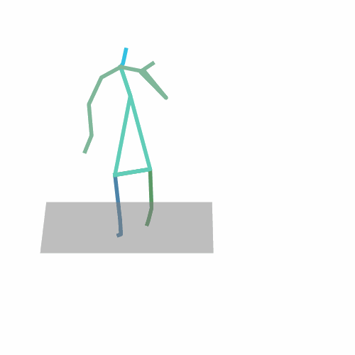
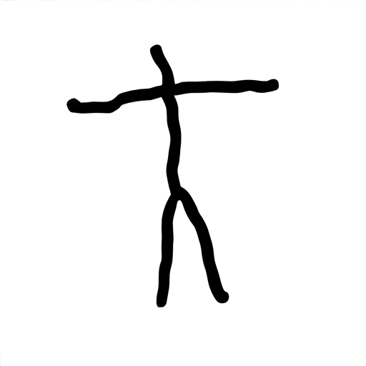
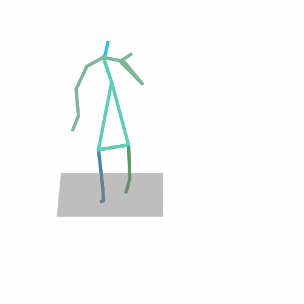
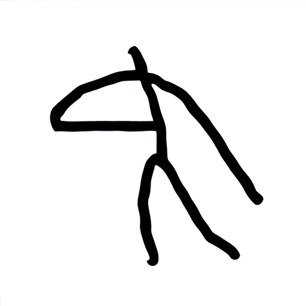
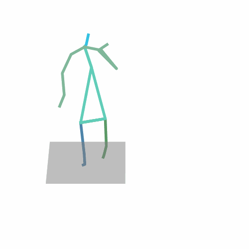
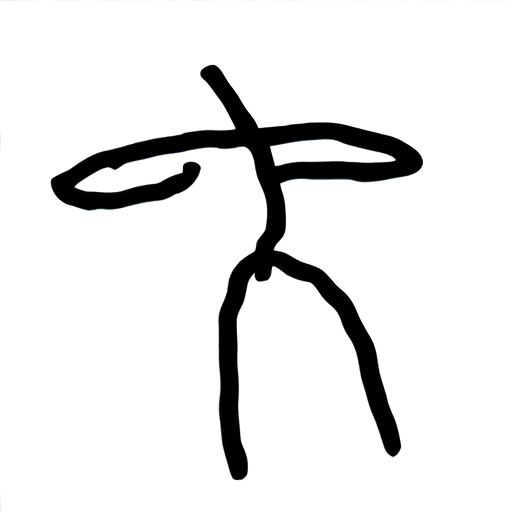
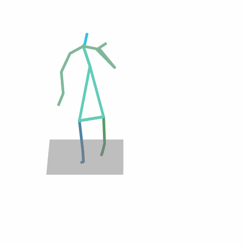
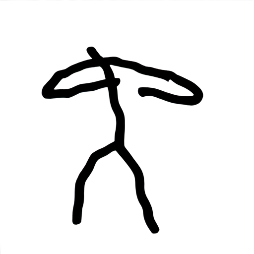
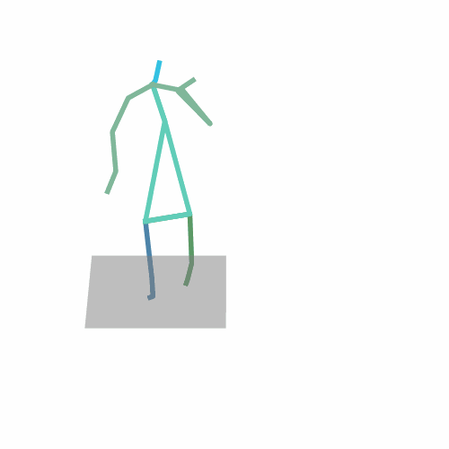
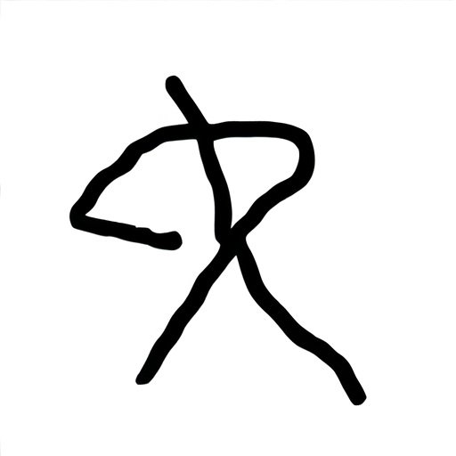
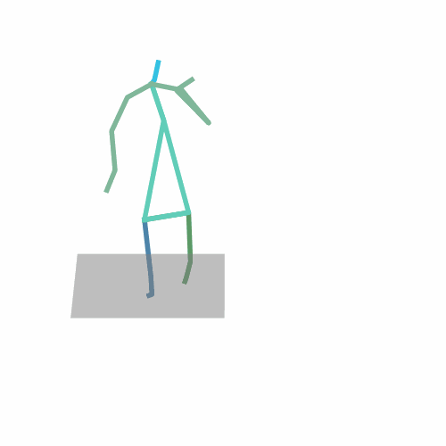
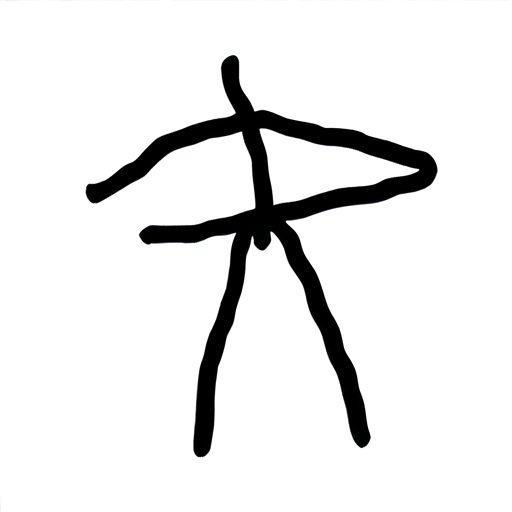
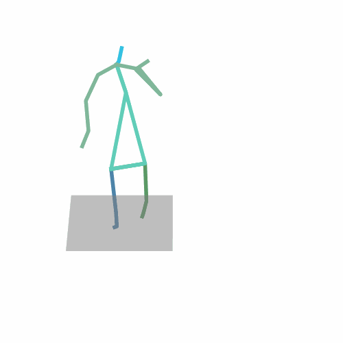
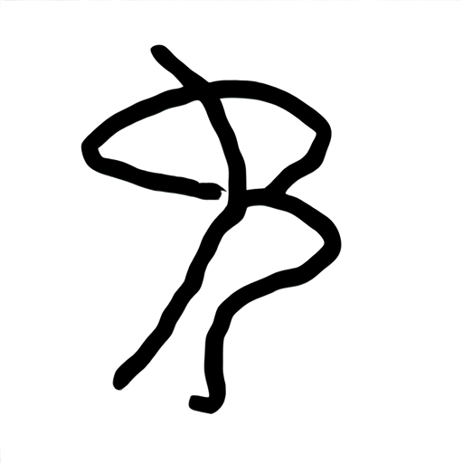
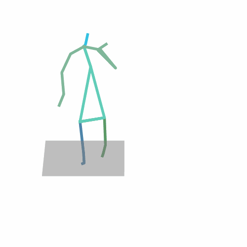
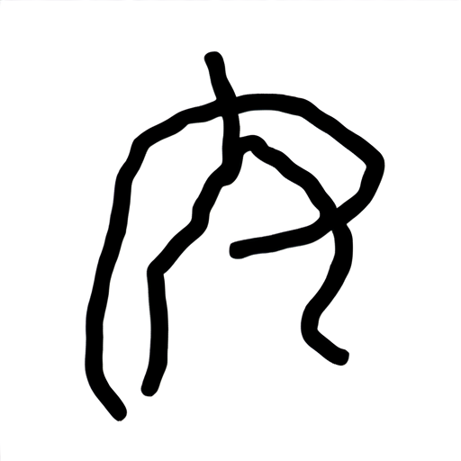
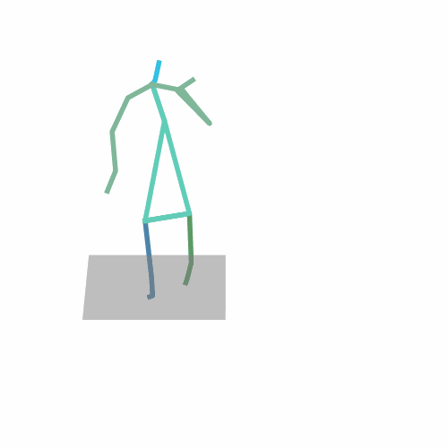
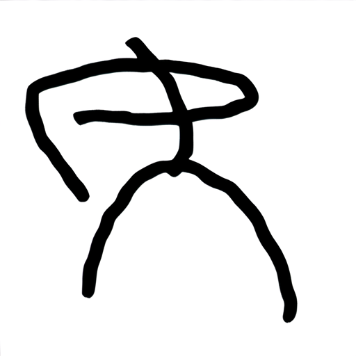
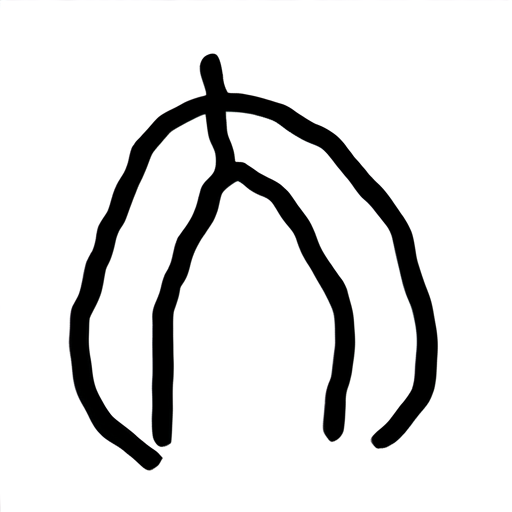
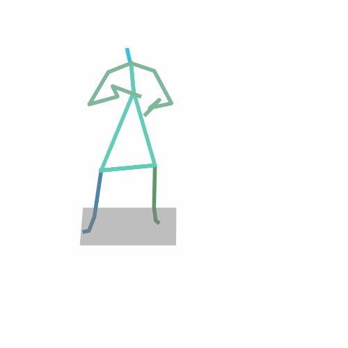
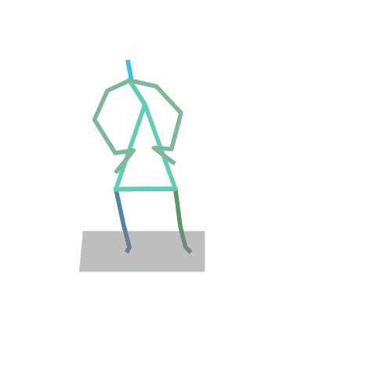
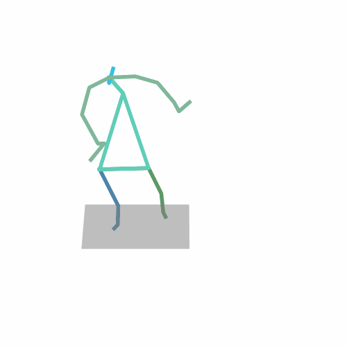
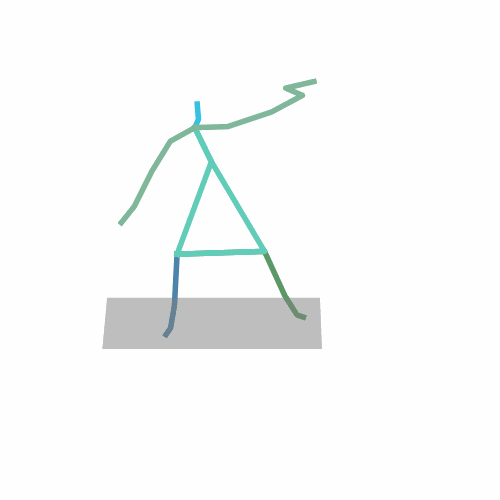
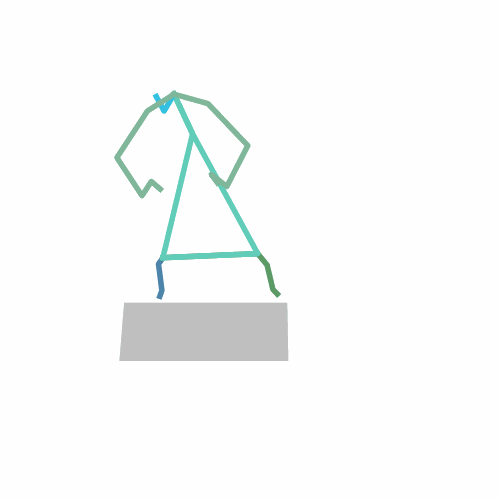
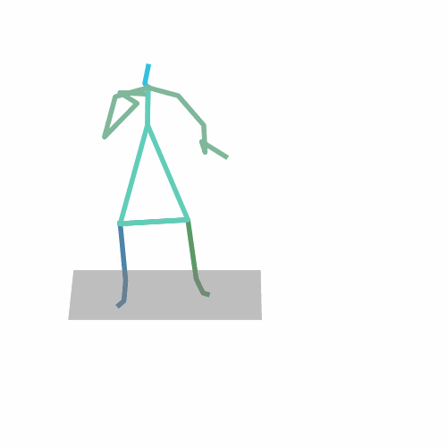
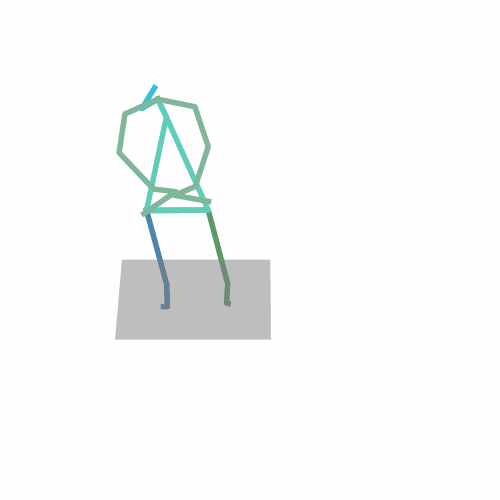
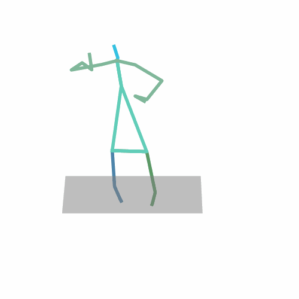
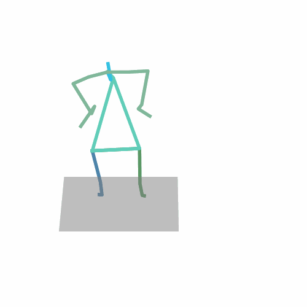
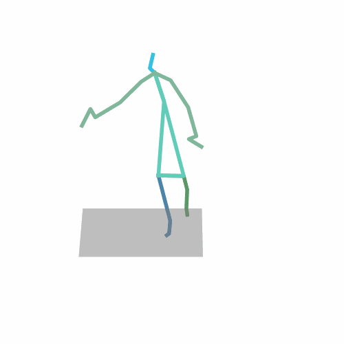
Human motion prediction typically relies on historical pose sequences to forecast future movements. However, existing methods struggle with the diversity of human behavior, especially in long-term predictions, where multiple plausible futures exist. This limitation makes current models ill-suited for interactive applications, such as animation or human-computer interaction, where users may want to guide or adjust the predicted motion intuitively. To address this, we propose a novel task: sketch-guided long-term human motion prediction, which allows users to intuitively control motion outcomes using hand-drawn stick figure sketches. We use a contrastive learning framework that maps sketches and joint coordinates into a shared feature space. During training, we align paired sketch-pose embeddings, and during inference, sketch features seamlessly replace pose features to guide the motion prediction model. To effectively integrate sketch and motion information, we explore and compare several feature fusion strategies, including direct addition, concatenation, gated fusion, and bilinear interaction. To support this new task, we construct the Pose Sketch Dataset, comprising over 250 k paired sketches and poses, generated via a combination of hand-drawn samples and image-to-image sketch synthesis using Stable Diffusion. Extensive experiments on the Human3.6M dataset show that our method significantly improves long-term motion prediction performance, achieving a 22.3\% reduction in MPJPE at 1000 ms compared to baseline models. Our results demonstrate that even abstract, low-fidelity sketches can robustly guide motion prediction, enabling more interactive and controllable human motion modeling systems.